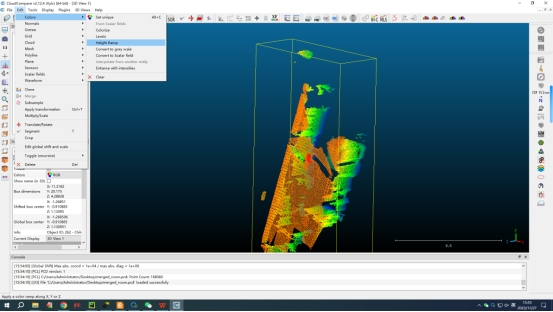
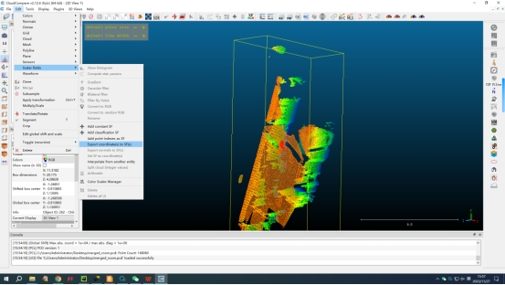
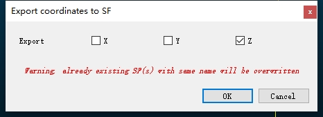
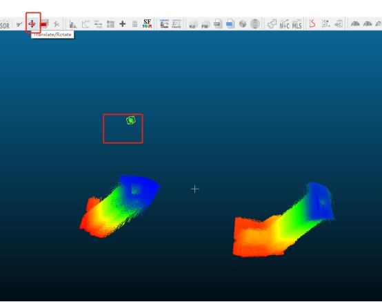
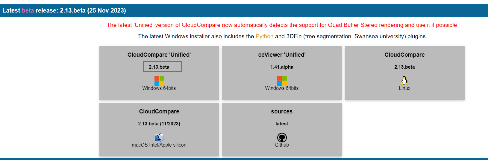
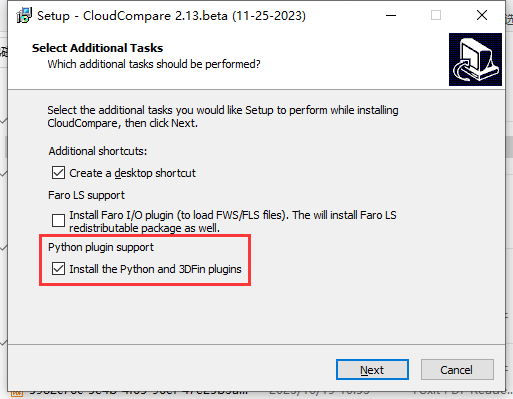
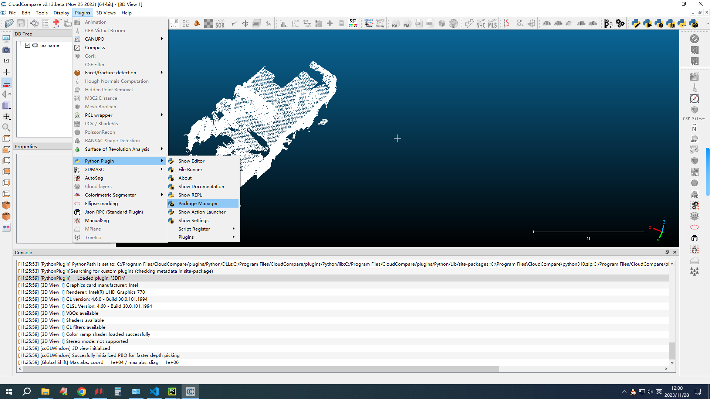
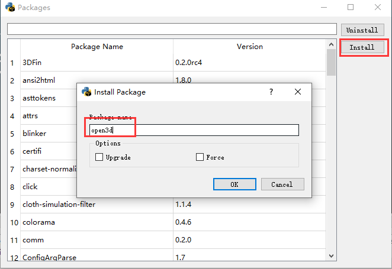
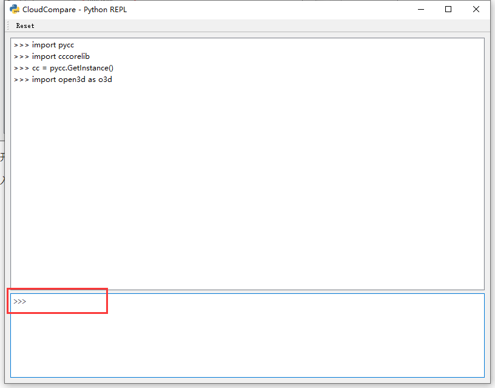
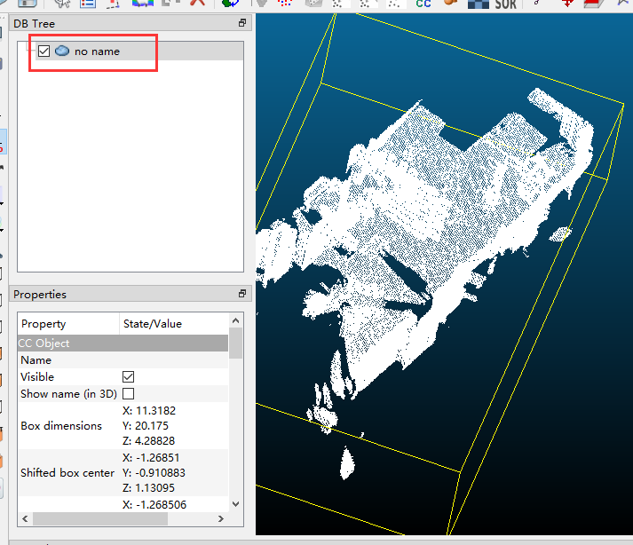

前言
最近在做点云处理相关的工作，这里找到了一个非常好用的开源软件CloudCompare（下称CC）。这里对我的常用操作进行总结，并介绍CC的Python插件，该插件可以实现自定义的点云操作实现，极大地扩展了CC的功能。
常用操作
点云按高程赋色
打开的点云没有颜色，很难看且很难操作，为了让点云更有立体感，可以按高程对点云进行赋色。
Edit -> Colors -> Height Ramp

CC也可以按照其他轴进行赋色
Edit -> Scalar fields -> export coordinate to SF， 选择x/y/z轴


使用多边形对点云裁剪
https://blog.csdn.net/qq_32867925/article/details/124187166
计算点云中两个点之间的距离
https://blog.csdn.net/qq_36686437/article/details/122224036
下采样
https://blog.csdn.net/qq_27353621/article/details/124008810
统计滤波
https://blog.csdn.net/qq_36686437/article/details/120011047
CC好像没有实现半径滤波，需要自行实现
计算体积
https://www.cnblogs.com/codeAndlearn/p/12317673.html
CC计算的并非是点云的凸包体积，CC好像没有实现凸包体积计算，需要自行实现
创建球并移动，计算球和球之间的距离
有时需要计算两点之间的距离，但是这两点虽然代表点云但并不在点云集合中，需要自定义位置。我们可以创建两个球，然后将它们拖动到指定位置，然后再计算距离。
首先，创建球
File -> Primitive Factory，选择sphere，确定位置和半径

然后拖动球：选中球，并点选下图图标。鼠标右键拖动。

将两个球拖动到合适的位置，计算距离

更多操作
这里有人总结了CC的操作，非常全面。
https://blog.csdn.net/qq_36686437/article/details/120100839
CC-Python插件
前置条件(Win10)
使用该插件需要安装最新版的CC，我安装的版本是2.13

在安装时，记得勾选

Windows是直接带有这个插件的，而MacOS下安装该插件需要自己去编译插件代码并安装。
这是插件代码的文档：https://tmontaigu.github.io/CloudCompare-PythonPlugin/
包括如何编译源码&Useage
安装完成后，记得更新一下pip：
进入安装目录下CloudCompare/plugins/Python，执行.\python.exe -m pip install --upgrade pip
使用插件示例
有些点云文件巨大，加载进来会很慢，我这里先将点云降采样之后才把他加载到CC中。
为了方便，我需要安装open3d
打开Python Manager： Plugins -> Python Plugins -> Package Manager
点击install，输入open3d 进行安装。

打开Show REPL： Plugins -> Python Plugins -> Show REPL
红框输入指令

以下是我输入的指令
import pycc |
至此可以看到CC场景中已经加载了点云

我们可以用插件实现前面CC未实现的诸多功能。更多用法可以参考前文提到的插件的官方文档。